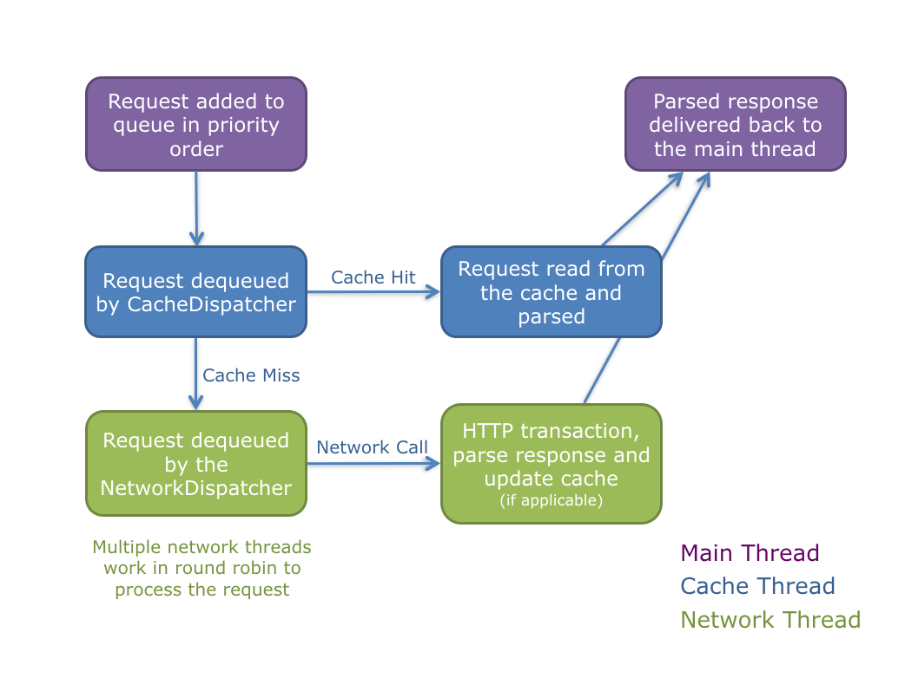
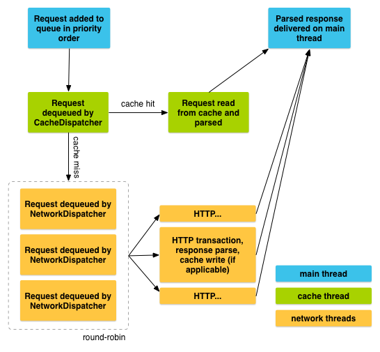

android http 开发
- 参考
- Volley - Project Home https://github.com/google/volley
- Volley - API Refer http://griosf.github.io/android-volley/index.html?overview-summary.html
- How To Simplify Networking In Android: Introducing The Volley HTTP Library https://www.smashingmagazine.com/2017/03/simplify-android-networking-volley-http-library/
- <>
http libraries
- Android Volley https://developer.android.com/training/volley/index.html
- Retrofit https://square.github.io/retrofit/
- Okhttp http://square.github.io/okhttp/
Volley
- Volley is a networking library developed by Google and introduced at Google I/O 2013.
- Volley is not suitable for large download or streaming operations, since Volley holds all responses in memory during parsing. For large download operations, consider using an alternative like
[DownloadManager].
In Volley, all network calls are asynchronous by default, so you don’t have to worry about performing tasks in the background anymore. Volley considerably simplifies networking with its cool set of features.
VOLLEY’S ARCHITECTURE
Before looking at the code, let’s get ourselves elbow-deep in Volley and understand its architecture. Below is a high-level architectural diagram of Volley’s flow. It works in a very simple way:
- Volley runs one cache processing thread and a pool of network dispatch threads.
- Network call requests are first triaged by the cache thread. If the response can be served from the cache, then the cached response is parsed by
CacheDispatcherand delivered back to the main thread, the UI thread. - If the result is not available in the cache, then a network request needs to be made to get the required data, for which the request is placed in the network queue.
- The first available network thread (
NetworkDispatcher) takes the request from the queue. It then performs the HTTP request, parses the response on the worker thread and writes the response to cache. It then delivers the parsed response back to the main thread.


Add Volley To Your Project Easily
添加网络访问的permission android.permission.INTERNET
1 | <uses-permission android:name="android.permission.INTERNET" /> |
方法1，通过gradle引用
The easiest way to add Volley to your project is to add the following dependency to your app’s build.gradle file.
- APP/BUILD.GRADLE
1 2 3 | dependencies { implementation 'com.android.volley:volley:x.y.z' } |
1 2 3 4 | dependencies { ... implementation 'com.android.volley:volley:1.1.0' } |
方法2，直接下载volley源代码
Another way to do this is by cloning the Volley repository. Build Volley with Ant, copy the built volley.jar file in the libs folder, and then create an entry in build.gradle to use the jar file. Here’s how:
1 2 3 4 | git clone https://github.com/google/volley
cd volley
android update project -p .
ant jar
|
You can find the generated volley.jar in Volley’s bin folder. Copy it to your libs folder in Android Studio, and add the entry below to app/build.gradle:
- APP/BUILD.GRADLE
1 2 3
dependencies { compile files('libs/volley.jar') }
Cancel a Request
To cancel a request, call cancel() on your Request object. Once cancelled, Volley guarantees that your response handler will never be called. What this means in practice is that you can cancel all of your pending requests in your activity’s onStop() method and you don’t have to litter your response handlers with checks for getActivity() == null, whether onSaveInstanceState() has been called already, or other defensive boilerplate.
To take advantage of this behavior, you would typically have to track all in-flight requests in order to be able to cancel them at the appropriate time. There is an easier way: you can associate a tag object with each request. You can then use this tag to provide a scope of requests to cancel. For example, you can tag all of your requests with the Activity they are being made on behalf of, and call requestQueue.cancelAll(this) from onStop(). Similarly, you could tag all thumbnail image requests in a ViewPager tab with their respective tabs and cancel on swipe to make sure that the new tab isn’t being held up by requests from another one.
Here is an example that uses a string value for the tag:
-
Define your tag and add it to your requests.
1 2 3 4 5 6 7 8 9
public static final String TAG = "MyTag"; StringRequest stringRequest; // Assume this exists. RequestQueue mRequestQueue; // Assume this exists. // Set the tag on the request. stringRequest.setTag(TAG); // Add the request to the RequestQueue. mRequestQueue.add(stringRequest);
-
In your activity’s onStop() method, cancel all requests that have this tag.
1 2 3 4 5 6 7
@Override protected void onStop () { super.onStop(); if (mRequestQueue != null) { mRequestQueue.cancelAll(TAG); } }
“Hello World” With Volley: Handling Standard String Requests
shows you how to make a request on https://api.ipify.org/?format=json, get the response and update the text view of your app
use Volley by creating a RequestQueue and passing it Request objects.
The RequestQueue manages the worker threads and makes the network calls in the background. It also takes care of writing to cache and parsing the response.
- MainActivity.java
1 2 3 4 5 6 7 8 9 10 11 12 13 14 15 16 17 18 19 20 21 22 23 24 25 26 27 28 29 30 31 32 33 34 35 36 37 38 39 40 41 42 43 44 45 46 47 48 49 50 51 52 53 54 55 56 57 58 59 60 | package com.example.chetan.androidnetworking; import android.os.Bundle; import android.support.v7.app.AppCompatActivity; import android.support.v7.widget.Toolbar; import android.view.View; import android.widget.Button; import android.widget.TextView; import com.android.volley.Request; import com.android.volley.RequestQueue; import com.android.volley.Response; import com.android.volley.VolleyError; import com.android.volley.toolbox.StringRequest; import com.android.volley.toolbox.Volley; public class MainActivity extends AppCompatActivity { @Override protected void onCreate(Bundle savedInstanceState) { super.onCreate(savedInstanceState); setContentView(R.layout.activity_main); //Set the title of Toolbar Toolbar toolbar = (Toolbar) findViewById(R.id.toolbar); setSupportActionBar(toolbar); //Get the ID of button that will perform the network call Button btn = (Button) findViewById(R.id.button); assert btn != null; btn.setOnClickListener(new View.OnClickListener() { @Override public void onClick(View v) { String url = "https://api.ipify.org/?format=json"; final TextView txtView = (TextView) findViewById(R.id.textView3); assert txtView != null; //Request a string response from the URL resource StringRequest stringRequest = new StringRequest(Request.Method.GET, url, new Response.Listener() { @Override public void onResponse(String response) { // Display the response string. txtView.setText("Response is: " + response.toString()); } }, new Response.ErrorListener() { @Override public void onErrorResponse(VolleyError error) { txtView.setText("Oops! That didn't work!"); } } ); //Instantiate the RequestQueue and add the request to the queue RequestQueue queue = Volley.newRequestQueue(getApplicationContext()); queue.add(stringRequest); } }); } |
Set Up a Network and Cache
A RequestQueue needs two things to do its job: a network to perform transport of the requests, and a cache to handle caching. There are standard implementations of these available in the Volley toolbox:
DiskBasedCacheprovides a one-file-per-response cache with an in-memory indexBasicNetworkprovides a network transport based on your preferred HTTP client.BasicNetworkis Volley’s default network implementation. A BasicNetwork must be initialized with the HTTP client your app is using to connect to the network. Typically this is anHttpURLConnection.
Caching Responses With Volley
To set up the cache, we have to implement a disk-based cache and add the cache object to the RequestQueue.
I set up a HttpURLConnection to make the network requests. Volley’s toolbox provides a standard cache implementation via the DiskBasedCache class, which caches the data directly on the hard disk.
- MainActivity.java
1 2 3 4 5 6 7 8 9 10 11 12 13 14 15 16 17 18 19 20 21 22 23 24 25 26 27 28 29 30 31 32 33 34 35 36 37 38 39 40 41 42 43 44 45 46 47 48 49 50 51 52 53 54 55 56 57 58 59 60 61 62 63 64 65 66 67 68 69 70 71 | package com.example.chetan.androidnetworking; import android.os.Bundle; import android.support.v7.app.AppCompatActivity; import android.support.v7.widget.Toolbar; import android.view.View; import android.widget.Button; import android.widget.TextView; import com.android.volley.Request; import com.android.volley.RequestQueue; import com.android.volley.Response; import com.android.volley.VolleyError; import com.android.volley.toolbox.BasicNetwork; import com.android.volley.toolbox.DiskBasedCache; import com.android.volley.toolbox.HurlStack; import com.android.volley.toolbox.StringRequest; import com.android.volley.toolbox.Volley; public class MainActivity extends AppCompatActivity { @Override protected void onCreate(Bundle savedInstanceState) { super.onCreate(savedInstanceState); setContentView(R.layout.activity_main); //Set the title of Toolbar Toolbar toolbar = (Toolbar) findViewById(R.id.toolbar); setSupportActionBar(toolbar); //Get the ID of button, which will perform the network call Button btn = (Button) findViewById(R.id.button); assert btn != null; btn.setOnClickListener(new View.OnClickListener() { @Override public void onClick(View v) { String url = "https://api.ipify.org/?format=json"; final TextView txtView = (TextView) findViewById(R.id.textView3); assert txtView != null; // Setup 1 MB disk-based cache for Volley Cache cache = new DiskBasedCache(getCacheDir(), 1024 * 1024); // Use HttpURLConnection as the HTTP client Network network = new BasicNetwork(new HurlStack()); StringRequest stringRequest = new StringRequest(Request.Method.GET, url, new Response.Listener() { @Override public void onResponse(String response) { // Display the string response on the UI txtView.setText("Response is: " + response.toString()); } }, new Response.ErrorListener() { @Override public void onErrorResponse(VolleyError error) { txtView.setText("Oops! That didn't work!"); } } ); // Instantiate the RequestQueue with the cache and network, start the request // and add it to the queue RequestQueue queue = new RequestQueue(cache, network); queue.start(); queue.add(stringRequest); } }); } |
Use a Singleton Pattern
A key concept is that the RequestQueue must be instantiated with the Application context, not an Activity context. 这种做法保证 RequestQueue 与 app 同寿，而不是 activity。
an example of a singleton class that provides RequestQueue and ImageLoader functionality:
1 2 3 4 5 6 7 8 9 10 11 12 13 14 15 16 17 18 19 20 21 22 23 24 25 26 27 28 29 30 31 32 33 34 35 36 37 38 39 40 41 42 43 44 45 46 47 48 49 50 51 52 53 54 55 56 57 58 59 60 | public class MySingleton { private static MySingleton mInstance; private RequestQueue mRequestQueue; private ImageLoader mImageLoader; private static Context mCtx; private MySingleton(Context context) { mCtx = context; mRequestQueue = getRequestQueue(); mImageLoader = new ImageLoader(mRequestQueue, new ImageLoader.ImageCache() { private final LruCache<String, Bitmap> cache = new LruCache<String, Bitmap>(20); @Override public Bitmap getBitmap(String url) { return cache.get(url); } @Override public void putBitmap(String url, Bitmap bitmap) { cache.put(url, bitmap); } }); } public static synchronized MySingleton getInstance(Context context) { if (mInstance == null) { mInstance = new MySingleton(context); } return mInstance; } public RequestQueue getRequestQueue() { if (mRequestQueue == null) { // getApplicationContext() is key, it keeps you from leaking the // Activity or BroadcastReceiver if someone passes one in. mRequestQueue = Volley.newRequestQueue(mCtx.getApplicationContext()); } return mRequestQueue; } public <T> void addToRequestQueue(Request<T> req) { getRequestQueue().add(req); } public ImageLoader getImageLoader() { return mImageLoader; } }//END OF CLASS MySingleton // Get a RequestQueue RequestQueue queue = MySingleton.getInstance(this.getApplicationContext()). getRequestQueue(); // ... // Add a request (in this example, called stringRequest) to your RequestQueue. MySingleton.getInstance(this).addToRequestQueue(stringRequest); |
Setting Up Singleton Class For RequestQueue
Creating a RequestQueue as a singleton is recommended, so that the RequestQueue lasts for the lifetime of your app.
- VolleyController.java
1 2 3 4 5 6 7 8 9 10 11 12 13 14 15 16 17 18 19 20 21 22 23 24 25 26 27 28 29 30 31 32 33 34 35 36 37 38 39 40 | package com.example.chetan.androidnetworking; import android.content.Context; import com.android.volley.Request; import com.android.volley.RequestQueue; import com.android.volley.toolbox.ImageLoader; import com.android.volley.toolbox.Volley; public class VolleyController { private static VolleyController mInstance; private RequestQueue mRequestQueue; private static Context mCtx; private VolleyController(Context context) { mCtx = context; mRequestQueue = getRequestQueue(); } public static synchronized VolleyController getInstance(Context context) { // If instance is not available, create it. If available, reuse and return the object. if (mInstance == null) { mInstance = new VolleyController(context); } return mInstance; } public RequestQueue getRequestQueue() { if (mRequestQueue == null) { // getApplicationContext() is key. It should not be activity context, // or else RequestQueue won't last for the lifetime of your app mRequestQueue = Volley.newRequestQueue(mCtx.getApplicationContext()); } return mRequestQueue; } public void addToRequestQueue(Request req) { getRequestQueue().add(req); } } |
Making a Standard Request
StringRequest. Specify a URL and receive a raw string in response. See Setting Up a Request Queue for an example.JsonObjectRequestandJsonArrayRequest(both subclasses ofJsonRequest). Specify a URL and get a JSON object or array (respectively) in response.
Request JSON
Volley provides the following classes for JSON requests:
JsonArrayRequest— A request for retrieving aJSONArrayresponse body at a given URL.JsonObjectRequest— A request for retrieving aJSONObjectresponse body at a given URL, allowing for an optional JSONObject to be passed in as part of the request body.
Both classes are based on the common base class JsonRequest. You use them following the same basic pattern you use for other types of requests. For example, this snippet fetches a JSON feed and displays it as text in the UI:
1 2 3 4 5 6 7 8 9 10 11 12 13 14 15 16 17 18 19 20 21 22 23 | TextView mTxtDisplay; ImageView mImageView; mTxtDisplay = (TextView) findViewById(R.id.txtDisplay); String url = "http://my-json-feed"; JsonObjectRequest jsObjRequest = new JsonObjectRequest (Request.Method.GET, url, null, new Response.Listener<JSONObject>() { @Override public void onResponse(JSONObject response) { mTxtDisplay.setText("Response: " + response.toString()); } }, new Response.ErrorListener() { @Override public void onErrorResponse(VolleyError error) { // TODO Auto-generated method stub } }); // Access the RequestQueue through your singleton class. MySingleton.getInstance(this).addToRequestQueue(jsObjRequest); |
Implementing a Custom Request
Write a Custom Request
- Extend the
Request<T>class, where<T>represents the type of parsed response the request expects. So if your parsed response is a string, for example, create your custom request by extendingRequest<String>. See the Volley toolbox classes StringRequest and ImageRequest for examples of extendingRequest<T>. - Implement the abstract methods
parseNetworkResponse()anddeliverResponse(), described in more detail below.
parseNetworkResponse
A Response encapsulates a parsed response for delivery, for a given type (such as string, image, or JSON). Here is a sample implementation of parseNetworkResponse():
parseNetworkResponse()takes as its parameter a NetworkResponse, which contains the response payload as abyte[], HTTP status code, and response headers.- Your implementation must return a
Response<T>, which contains your typed response object and cache metadata or an error, such as in the case of a parse failure.
1 2 3 4 5 6 7 8 9 10 11 12 | @Override protected Response<T> parseNetworkResponse( NetworkResponse response) { try { String json = new String(response.data, HttpHeaderParser.parseCharset(response.headers)); return Response.success(gson.fromJson(json, clazz), HttpHeaderParser.parseCacheHeaders(response)); } // handle errors ... } |
deliverResponse
Volley calls you back on the main thread with the object you returned in parseNetworkResponse(). Most requests invoke a callback interface here, for example:
1 2 | protected void deliverResponse(T response) { listener.onResponse(response); |
Example: GsonRequest
Gson is a library for converting Java objects to and from JSON using reflection. You can define Java objects that have the same names as their corresponding JSON keys, pass Gson the class object, and Gson will fill in the fields for you. Here’s a complete implementation of a Volley request that uses Gson for parsing:
1 2 3 4 5 6 7 8 9 10 11 12 13 14 15 16 17 18 19 20 21 22 23 24 25 26 27 28 29 30 31 32 33 34 35 36 37 38 39 40 41 42 43 44 45 46 47 | public class GsonRequest<T> extends Request<T> { private final Gson gson = new Gson(); private final Class<T> clazz; private final Map<String, String> headers; private final Listener<T> listener; /** * Make a GET request and return a parsed object from JSON. * * @param url URL of the request to make * @param clazz Relevant class object, for Gson's reflection * @param headers Map of request headers */ public GsonRequest(String url, Class<T> clazz, Map<String, String> headers, Listener<T> listener, ErrorListener errorListener) { super(Method.GET, url, errorListener); this.clazz = clazz; this.headers = headers; this.listener = listener; } @Override public Map<String, String> getHeaders() throws AuthFailureError { return headers != null ? headers : super.getHeaders(); } @Override protected void deliverResponse(T response) { listener.onResponse(response); } @Override protected Response<T> parseNetworkResponse(NetworkResponse response) { try { String json = new String( response.data, HttpHeaderParser.parseCharset(response.headers)); return Response.success( gson.fromJson(json, clazz), HttpHeaderParser.parseCacheHeaders(response)); } catch (UnsupportedEncodingException e) { return Response.error(new ParseError(e)); } catch (JsonSyntaxException e) { return Response.error(new ParseError(e)); } } } |
JSON Requests 例子
Below is the code for creating a custom JSONObject Request in Volley. You can handle ImageRequest types in the same manner.
- CustomJSONObjectRequest.java
1 2 3 4 5 6 7 8 9 10 11 12 13 14 15 16 17 18 19 20 21 22 23 24 25 26 27 28 29 30 31 32 33 34 35 36 37 38 39 40 41 42 43 44 45 46 47 48 49 50 51 52 53 54 | package com.example.chetan.androidnetworking; import com.android.volley.NetworkResponse; import com.android.volley.ParseError; import com.android.volley.Request; import com.android.volley.Response; import com.android.volley.Response.ErrorListener; import com.android.volley.Response.Listener; import com.android.volley.toolbox.HttpHeaderParser; import org.json.JSONException; import org.json.JSONObject; import java.io.UnsupportedEncodingException; import java.util.Map; public class CustomJSONObjectRequest extends Request { private Listener listener; private Map<String, String> params; Priority mPriority; public CustomJSONObjectRequest(int method, String url, Map<String, String> params, Listener responseListener, ErrorListener errorListener) { super(method, url, errorListener); this.listener = responseListener; this.params = params; } protected Map<String, String> getParams() throws com.android.volley.AuthFailureError { return params; }; @Override protected Response parseNetworkResponse(NetworkResponse response) { try { String jsonString = new String(response.data, HttpHeaderParser.parseCharset(response.headers)); return Response.success(new JSONObject(jsonString), HttpHeaderParser.parseCacheHeaders(response)); } catch (UnsupportedEncodingException e) { return Response.error(new ParseError(e)); } catch (JSONException je) { return Response.error(new ParseError(je)); } } @Override protected void deliverResponse(JSONObject response) { listener.onResponse(response); } } |
- VolleyCallback.java
1 2 3 4 5 6 7 8 9 | package com.example.chetan.androidnetworking; import org.json.JSONException; import org.json.JSONObject; public interface VolleyCallback { void onSuccess(JSONObject result) throws JSONException; void onError(String result) throws Exception; } |
- MainActivity.java
1 2 3 4 5 6 7 8 9 10 11 12 13 14 15 16 17 18 19 20 21 22 23 24 25 26 27 28 29 30 31 32 33 34 35 36 37 38 39 40 41 42 43 44 45 46 47 48 49 50 51 52 53 54 55 56 57 58 59 60 61 62 63 64 65 66 67 68 69 70 71 72 73 74 | public class MainActivity extends AppCompatActivity { @Override protected void onCreate(Bundle savedInstanceState) { super.onCreate(savedInstanceState); setContentView(R.layout.activity_main); Toolbar toolbar = (Toolbar) findViewById(R.id.toolbar); setSupportActionBar(toolbar); Button btn = (Button) findViewById(R.id.button); assert btn != null; btn.setOnClickListener(new View.OnClickListener() { @Override public void onClick(View v) { String url = "https://api.ipify.org/?format=json"; final TextView txtView = (TextView) findViewById(R.id.textView3); assert txtView != null; makeRequest(url, new VolleyCallback() { @Override public void onSuccess(JSONObject result) throws JSONException { Toast.makeText(getApplicationContext(), "Hurray!!", Toast.LENGTH_LONG).show(); txtView.setText(String.format("My IP is: %s", result.getString("ip"))); txtView.setTextColor(Color.BLUE); } @Override public void onError(String result) throws Exception {} }); } }); } // Custom JSON Request Handler public void makeRequest( final String url, final VolleyCallback callback) { CustomJSONObjectRequest rq = new CustomJSONObjectRequest(Request.Method.GET, url, null, new Response.Listener() { //Pass response to success callback @Override public void onResponse(JSONObject response) { Log.v("Response", response.toString()); try { String ip = response.getString("ip"); if (ip != "null") { callback.onSuccess(response); } } catch (Exception e) { e.printStackTrace(); } } }, new Response.ErrorListener() { @Override public void onErrorResponse(VolleyError error) {} }) { @Override public Map<String, String> getHeaders() throws AuthFailureError { HashMap<String, String> headers = new HashMap<String, String>(); return headers; } @Override protected Map<String, String> getParams() { Map<String, String> params = new HashMap<String, String>(); return params; } }; // Request added to the RequestQueue VolleyController.getInstance(getApplicationContext()).addToRequestQueue(rq); } |
Request An Image With Volley
Volley offers the following classes for requesting images:
ImageRequestThis is used to get an image at the given URL. It also helps with resizing images to the size you need, and all of this happens in the worker thread.ImageLoaderThis class handles the loading and caching of images from remote URLs.NetworkImageViewThis replaces ImageView when the image is being fetched from a URL via the network call. It also cancels pending requests if the ImageView detaches and is no longer available.
For caching images, you should use the in-memory LruBitmapCache class, which extends LruCache.
Retry Mechanism In Volley
Volley does retry network calls if you have set the retry policy for your requests. We can change the retry values for each request using setRetryPolicy(). This is implemented in the DefaultRetryPolicy class of Android. You can set the retry policy for a request in this manner:
1 2 | rq.setRetryPolicy(new DefaultRetryPolicy(DefaultRetryPolicy.TIMEOUT_MS, DefaultRetryPolicy.DEFAULT_MAX_RETRIES, DefaultRetryPolicy.DEFAULT_BACKOFF_MULT)); |
Volley: Error-Handling
Volley can catch network errors very easily, and you don’t have to bother much with cases in which there is a loss of network connectivity. In my app, I’ve chosen to handle network errors with the error message “No Internet access.”
The code below shows how to handle NoConnection errors.
1 2 3 4 5 6 7 8 9 10 11 12 13 14 15 16 17 18 19 20 21 22 23 24 25 26 27 28 29 30 31 32 33 34 35 36 37 38 39 40 41 42 43 44 45 46 47 48 49 50 51 52 53 54 55 56 57 58 59 60 61 62 63 64 65 66 67 68 69 70 71 72 73 74 75 76 77 78 79 80 81 82 83 84 85 86 87 88 89 90 91 92 93 94 95 96 | public class MainActivity extends AppCompatActivity { @Override protected void onCreate(Bundle savedInstanceState) { super.onCreate(savedInstanceState); setContentView(R.layout.activity_main); Toolbar toolbar = (Toolbar) findViewById(R.id.toolbar); setSupportActionBar(toolbar); Button btn = (Button) findViewById(R.id.button); assert btn != null; btn.setOnClickListener(new View.OnClickListener() { @Override public void onClick(View v) { String url = "https://api.ipify.org/?format=json"; final TextView txtView = (TextView) findViewById(R.id.textView3); assert txtView != null; makeRequest(url, new VolleyCallback() { @Override public void onSuccess(JSONObject result) throws JSONException { Toast.makeText(getApplicationContext(), "Hurray!!", Toast.LENGTH_LONG).show(); txtView.setText(String.format("My IP is: %s", result.getString("ip"))); txtView.setTextColor(Color.BLUE); } @Override public void onError(String result) throws Exception { Toast.makeText(getApplicationContext(), "Oops!!", Toast.LENGTH_LONG).show(); txtView.setText(result); txtView.setTextColor(Color.RED); } }); } }); } public void makeRequest( final String url, final VolleyCallback callback) { CustomJSONObjectRequest rq = new CustomJSONObjectRequest(Request.Method.GET, url, null, new Response.Listener() { @Override public void onResponse(JSONObject response) { Log.v("Response", response.toString()); try { String ip = response.getString("ip"); if (ip != "null") { callback.onSuccess(response); } } catch (Exception e) { e.printStackTrace(); } } }, new Response.ErrorListener() { @Override public void onErrorResponse(VolleyError error) { Log.v("Response", error.toString()); String err = null; if (error instanceof com.android.volley.NoConnectionError){ err = "No internet Access!"; } try { if(err != "null") { callback.onError(err); } else { callback.onError(error.toString()); } } catch (Exception e) { e.printStackTrace(); } } }) { @Override public Map<String, String> getHeaders() throws AuthFailureError { HashMap<String, String> headers = new HashMap<String, String>(); headers.put("Content-Type", "application/json"); return headers; } @Override protected Map<String, String> getParams() { Map<String, String> params = new HashMap<String, String>(); return params; } }; rq.setPriority(Request.Priority.HIGH); VolleyController.getInstance(getApplicationContext()).addToRequestQueue(rq); } } |
Volley: Adding Request Headers
To make API calls to third-party REST APIs, you need to pass API access tokens or have support for different authorization types. Volley lets you do that easily. Add the headers to the HTTP GET call using the headers.put(key,value) method call:
1 2 3 4 5 6 | @Override public Map<String, String> getHeaders() throws AuthFailureError { HashMap<String, String> headers = new HashMap<String, String>(); headers.put("Content-Type", "application/json"); return headers; } |
Volley: Prioritizing Requests
Setting priorities for your network calls is required in order to differentiate between critical operations, such as fetching the status of a resource and pulling its meta data. You don’t want to compromise a critical operation, which is why you should implement priorities. Below is an example that demonstrates how you can use Volley to set priorities. Here, we are using the CustomJSONObjectRequest class, which we defined earlier, to implement the setPriority() and getPriority() methods, and then in the MainActivity class, we are setting the appropriate priority for our request. As a rule of thumb, you can use these priorities for the relevant operations:
1 2 3 4 | Priority.LOW // images, thumbnails Priority.NORMAL // standard queries Priority.HIGH // descriptions, lists Priority.IMMEDIATE // login, logout |
- CustomJSONObjectRequest.java
1 2 3 4 5 6 7 8 9 | public void setPriority(Priority priority) { mPriority = priority; } @Override public Priority getPriority() { // Priority is set to NORMAL by default return mPriority != null ? mPriority : Priority.NORMAL; } |
- MainActivity.java
1 2 | // set priority to HIGH rq.setPriority(Request.Priority.HIGH); |
Advantages Of Volley
Volley is a useful library and can save the day for a developer. It’s an integral part of my toolkit, and it would be a huge win for a development team in any project. Let’s review Volley’s benefits:
- It is responsive to user interactions, because all network processes happen asynchronously. The UI thread always remain free to handle any user interaction.
- It handles networking tasks asynchronously. Whenever a network request is made, a background thread is created to process network calls.
- Volley improves the lag time between requests because it can make multiple requests without the overhead of thread management.
- Google has made considerable efforts to improve the performance of the Volley library by improving memory usage patterns and by passing callbacks to the main thread in a batch. This reduces context switching and will make your app faster.